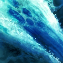
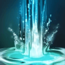
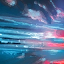
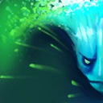
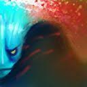
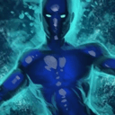

Обходит врагов, превращаясь в волну, Благодаря способности вливаться в любую ситуацию Morphling увёртлив и смертоносен. Если его пытаются загнать в угол, он уходит от врага на своей волне или увеличивает здоровье и превращается в ложного двойника героя. Этот герой имеет 6 способностей, waveform, adaptive strike (сила и ловкость) atribute shift (сила и ловкость), morph. Герой имеет сложность 3 звезды, что означает то что это сложный герой.
Многие века космос бороздила ледяная комета. Громадный шар, прикованный к дальней звезде неумолимыми силами гравитации, мчался сквозь тьму меж мирами, обретая в своём путешествии необычайные свойства. Однажды, в канун войны за Влой, комета рухнула со звёздного неба, оставив в ночи светящийся след, принятый обеими армиями как знак судьбы. Ледяной шар стремительно таял во вспышке кипящей жары, а две стороны схлестнулись в схватке по берегам узкой речонки. Тогда-то, вырвавшись из ледяного сна, был рождён Морфлинг — элементаль, обладающий силой стихии столь же капризной и необузданной, как сам океан. Он инстинктивно принял облик первого же генерала, отваживавшегося ступить в воду, и сразив того намертво, вступил в бой. Пока глупые солдатики бились друг с другом, элементаль перемещался по полю битвы, меняя форму одну за другой. Он мгновенно поглощал образы странных существ — то пехотинца, то лучника, то кавалериста, — и к тому мгновению, когда пал последний солдат, элементаль сыграл каждую роль. Конец этой битвы стал его началом.
| Название | Описание | Иконка |
| Waveform | Герой принимает жидкую форму и устремляется вперёд, нанося урон всем врагам на своём пути. Во время применения способности герой неуязвим. |  |
| Adaptive strike(ловкость) | Запускает во вражеское существо поток воды, нанося ему урон в зависимости от ловкости героя. Множитель ловкости будет максимальным, если ловкость героя на 50% выше его силы. |  |
| Adaptive strike (сила) | Запускает во вражеское существо поток воды, оглушая и отталкивая его назад в зависимости от силы героя. Оглушение и толчок будут максимальными, если сила героя на 50% выше его ловкости. |  |
| Atribute shift (ловкость) | Герой меняет свою форму, превращая очки силы в очки ловкости. Этот процесс обратим. С уровнем растёт скорость превращения. Также даёт постоянный бонус к ловкости. |  |
| Atribute shift (сила) | Герой меняет свою форму, превращая очки ловкости в очки силы. Этот процесс обратим. С уровнем растёт скорость превращения. Также даёт постоянный бонус к силе. |  |
| Morph | Герой изменяет свою форму по образу и подобию выбранного противника, получая его основные способности с уменьшенным расходом маны. Во время действия форму героя можно изменить на основную и наоборот. |  |
В начале игры я предпочитаю купить максимум статов, а потом на первые деньги донести рассходники. В начале я покупаю две Circlet, две iron branc, Faerie Fire, Quelling Blade, вы можете вместо Quelling Blade купить пачку Tango. После этого я покупаю Power Treads, а затем покупаю или Ring of health, или Morbit mask, мы берем ring of health в том случае если в будующем будем покупать Linken's Sphere, второй вавриант в том случае если будем покупать Satanic. После того как мы определились с одним из этих предметов можем купить или Falcon blade, или Dragon lance. Я редко покупаю какой либо из этих предметов, так же к ним можно докупить Raindrops. Затем покупаем Manta style, затем Aghanim's Scepter. Это обязательные предметы которые должны быть, далее идут ситуативные предметы которые берут против определенных героев и в разных ситуациях. например вы можетье купить BKB противы большоко колчества магического урона, Linken's Sphere против напровлянемых способностей которые вам будут сильно мешать по игре, Scythe of Vyse для контроля, Orchid Malevolence против героев которые практически ничего не могут делать под еффектом безмолвия и тд. Вы можете больше узнать про сборки в профиле лучшего игрока на Morphling или же на сайте D2PT
Да
Нет